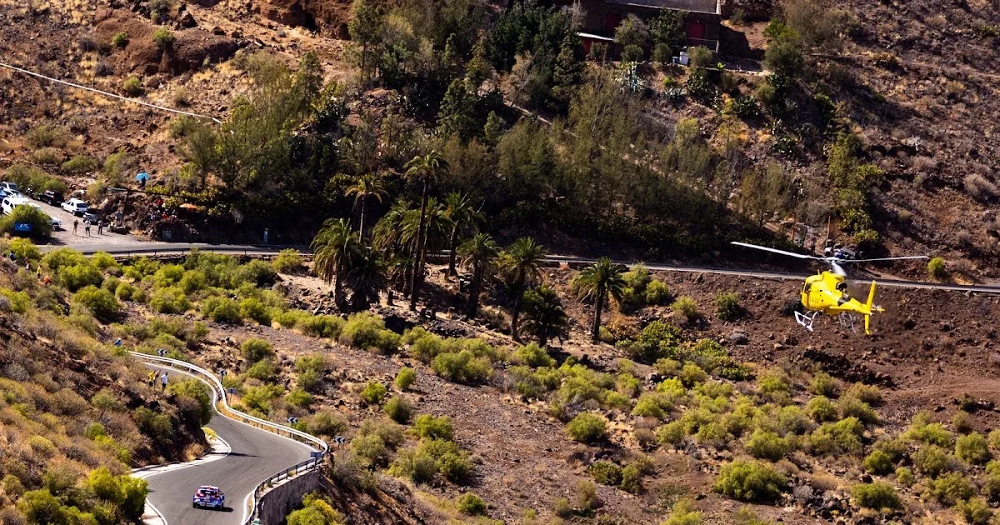
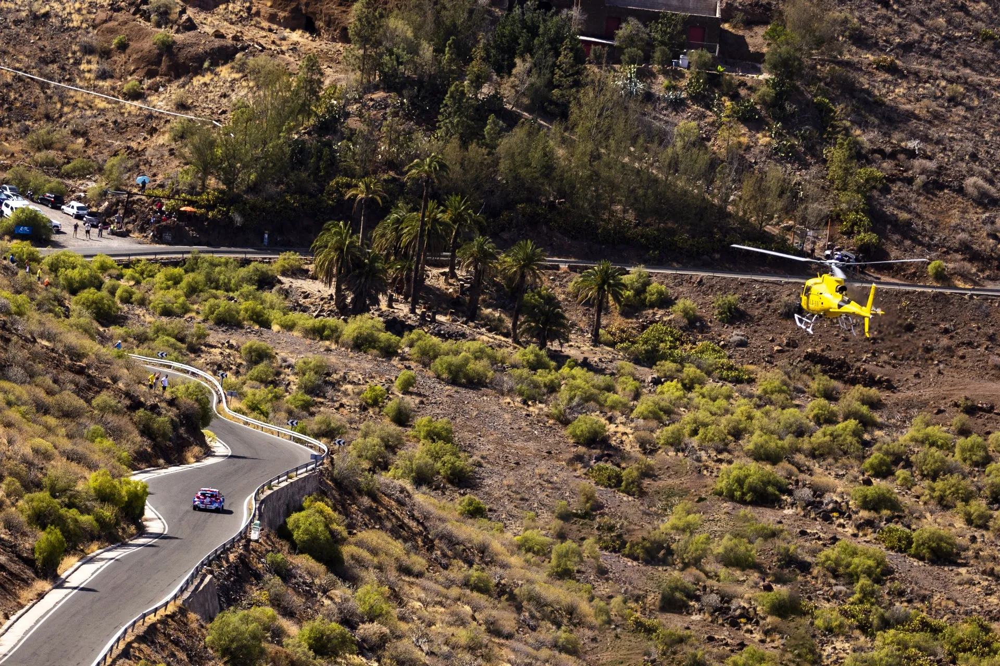
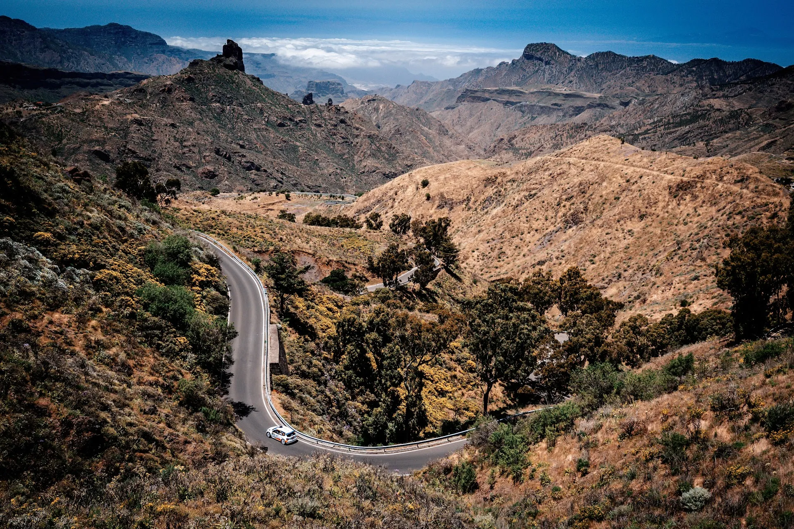
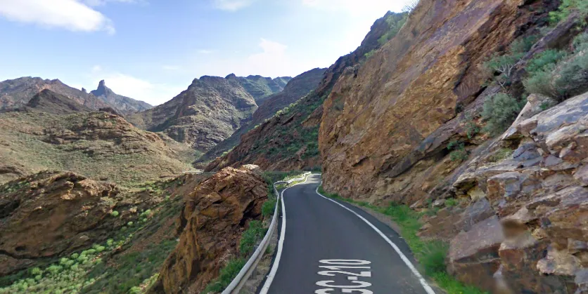
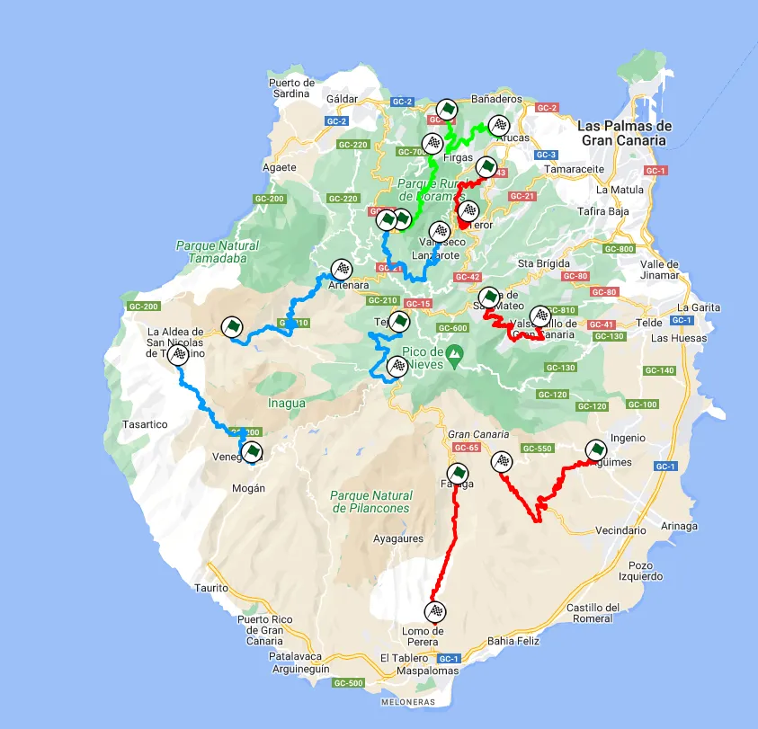

What to expect from a WRC rally in the Canary Islands
The WRC will be returning to Spain after a two year's absence, in a new location, with the Canary Islands being set to host a WRC event for the first time. The Gran Canaria island has been host of the Rally Islas Canarias (formerly known as Rally El Corte Inglés), an event that's been a staple of the ERC calendar, having featured in the championship since the early 80s. But how would a WRC event in the Canaries look like, and what does the WRC gain by visiting the island chain in the Atlantic?

What makes Rally Islas Canarias unique?
I don't know how many of you know the Beatles song, "The Long And Winding Road", but it perfectly describes how the tarmac stages in Gran Canaria are like. The stages on the island are fast and flowing, with many, having cambered turns, like Rally New Zealand but on tarmac. Another feature of this event are the amazing backdrops it offers. The tarmac roads carve up the mountain, giving us fantastic views, of cars tackling roads with cliffs on one side, and mountain sides on the other.
Basically imagine Rally Catalunya, but on steroids!

Just imagine the Rally1 cars tackling these stages, wow!
Is there enough space on the island to host a WRC event?
That was a question I asked myself when the first rumours appeared about a WRC event in Gran Canaria. And the answer is a resounding yes! It's not just the ERC round held in Gran Canaria, but there's also other regional events held in the island, without necessarily using the same roads as the ERC event. For example while the 2024 event uses stages mostly on the north of the island, with the exception of the Era del Cardon stage, in the past it has also used stages in the west and south of the island, back when the event was based in Maspalomas. These stages haven't been used in a while, but can certainly be used again. So a 300 kilometre event is certainly possible. Although, I would imagine that the organisers could opt for the sprint event solution...

The Acusa - Artenara stage on the west of the island hasn't been used since 2002.
What about the local community? We've seen many fly-away rounds have little entries.
You don't have to worry about that in the Canaries. There's a Tarmac championship in the Canaries with a good history, and with a healthy amount of entries. The Islas Canarias rally is also part of Spain's Super Championship, so Spanish drivers from the mainland shouldn't be missing on this event either.

How a WRC event in the Canaries could look like (concept by me on Mapfab)
So in conclusion:
The WRC will be getting a fly away round, something that the promoter has been looking to get for a bit now, while simultaneously having a round with strong local support as well as rich history and great stages.
A good deal, don't you think?
It's a shame that it could be at the expense of Croatia, that's also been a fan favourite, and a great addition to the calendar.


Comments